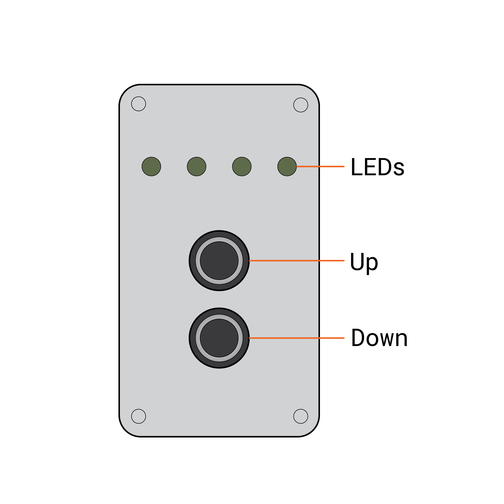
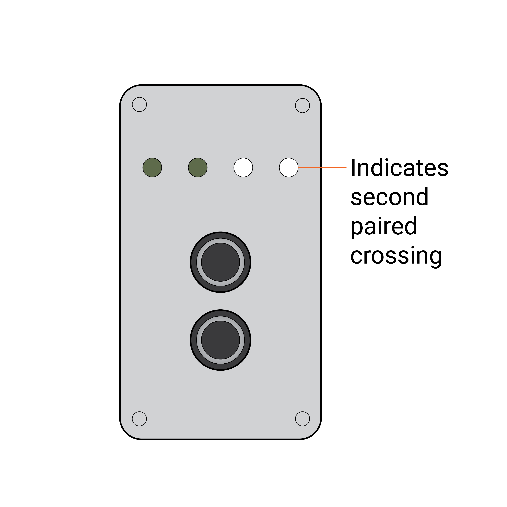

Remote
4.1 Remote Programming¶
Viewing list of crossings¶

- Press and hold the
UPbutton first immediately followed by theDOWNbutton, holding bothUPandDOWNbuttons for5 seconds - All 4 LEDs will blink blue when viewing mode is active
- While in viewing mode, press the
UPandDOWNarrows to navigate the list of paired Portable Crossing Gates

- Paired crossings are listed in binary, the number of the crossing represented by the number of LEDs illuminated in white
- To exit viewing mode, wait
15 seconds
Pairing a Crossing¶

- While in viewing mode, hold the
UPbutton for5 secondsuntil all 4 LEDs blink yellow repeatedly to enter pairing mode - Locate the control enclosure on the Portable Crossing Gate you wish to pair. Open the enclosure to expose the three control buttons. The pairing button is located in the center and colored blue with a radio icon
- Press the blue button on the Portable Crossing Gate to pair
- When crossing is paired, LEDs will blink to indicate a successful connection
- To pair another Portable Crossing Gate, bring the remote to the next crossing and press the blue pairing button within
15 seconds - Press any button to return to viewing mode
- Wait
15 secondsto return to normal control mode
Removing a Paired Crossing Gate¶
- In viewing mode, navigate to the number of the crossing you wish to remove, indicated in binary by the number of LEDs illuminated
- Hold the
DOWNbutton for5 secondsuntil the LEDs indicating the number of the crossing to remove blink red to show that it has been successfuly removed
Exiting to Control Mode¶
- From either viewing mode or pairing mode, wait
15 secondsto return to normal control mode - Any updates made to the list of paired crossings will be applied
4.2 Remote Operation¶
Charging the Remote¶
- Use the provided wireless charging cradle provided to keep the remote fully powered
- Always leave the remote on the cradle when not in use
Moving the Crossing Arm¶
Note that the remote control is always on when charged. Pressing either the UP or DOWN button will immediately activate the crossing when in range.
⚠️ Ensure that the arm's travel path is clear before raising or lowering to prevent injury or damage to equipment.
- Press the
UPbutton to raise the arm - Press the
DOWNbutton to lower the arm
4.3 Video Reference¶
Videos recorded on-site are provided to demonstrate operation of the remote.